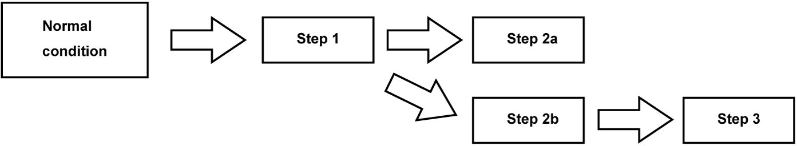
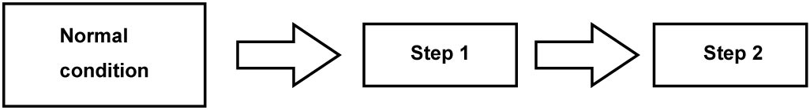
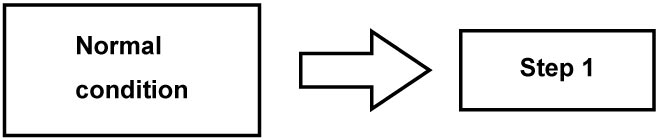

5A
| Fail-Safe Table |
This function is provided by the safe mechanism that assures safe driveability even when the solenoid valve, sensor or its circuit fails. The following table shows the fail-safe function for each fail condition of sensor, solenoid valve or its circuit.
| DTC | DTC name | Fail-safe operation | Fail-safe cancel condition |
|---|---|---|---|
| P0562 |
System Voltage Low |
•TCM stops the following control / function.
—Learning control
•Gear shifts to 3rd and remains in 3rd when the failure occurs in 1st, 2nd or 3rd gear.—Lock-up function —Slip controlled lock-up function —Garage shift control —Reverse control —Engine auto stop and start control (ENG A-STOP model) •Gear shifts to 5th and remains in 5th when the failure occurs in 4th, 5th or 6th gear. •Gear remains in R range when the failure occurs in R range. •Emergency mode 5 |
After switching ignition from “OFF” to “ON” or when vehicle is stopped after TCM judges the system to be normal. |
| P0563 |
System Voltage High |
•TCM stops learning control.
•Emergency mode 3 |
After switching ignition from “OFF” to “ON” or when vehicle is stopped after TCM judges the system to be normal. |
|
P0602 |
Control Module Programming Error | — | — |
| P0604 |
Internal Control Module Random Access Memory (RAM) Error | Emergency mode 3 |
After switching ignition from “OFF” to “ON”. |
| P062F |
Internal Control Module EEPROM Error | TCM controls with default value. | After switching ignition from “OFF” to “ON”. |
| P0706 |
Transmission Range Sensor “A” Circuit Range / Performance |
•TCM stops the following control / function.
—Learning control
•Gear remains in current position when the failure occurs.—Start-lock control —Adaptive shift control •Emergency mode 4 |
After switching ignition from “OFF” to “ON” or when vehicle is stopped after TCM judges the system to be normal. |
| P0707 |
Transmission Range Sensor “A” Circuit Low |
•TCM stops the following control / function.
—Learning control
•Gear remains in current position when the failure occurs.—Start-lock control —Adaptive shift control •Emergency mode 4 |
After switching ignition from “OFF” to “ON” or when vehicle is stopped after TCM judges the system to be normal. |
| P0708 |
Transmission Range Sensor “A” Circuit High |
•TCM stops the following control / function.
—Learning control
•Gear remains in current position when the failure occurs.—Start-lock control —Adaptive shift control •Emergency mode 4 |
After switching ignition from “OFF” to “ON” or when vehicle is stopped after TCM judges the system to be normal. |
| P0711 |
Transmission Fluid Temperature Sensor “A” Circuit Range / Performance |
•TCM controls actuators assuming that ATF temperature is 80 °C (176 °F).
•TCM stops the following control / function.
—Learning control
—Slip controlled lock-up function —Engine auto stop and start control (ENG A-STOP model) |
After switching ignition from “OFF” to “ON” or when vehicle is stopped after TCM judges the system to be normal. |
| P0712 |
Transmission Fluid Temperature Sensor “A” Circuit Low |
•TCM controls actuators assuming that ATF temperature is 80 °C (176 °F).
•TCM stops the following control / function.
—Learning control
—Slip controlled lock-up function —Engine auto stop and start control (ENG A-STOP model) |
After switching ignition from “OFF” to “ON” or when vehicle is stopped after TCM judges the system to be normal. |
| P0713 |
Transmission Fluid Temperature Sensor “A” Circuit High |
•TCM controls actuators assuming that ATF temperature is 80 °C (176 °F).
•TCM stops the following control / function.
—Learning control
—Slip controlled lock-up function —Engine auto stop and start control (ENG A-STOP model) |
After switching ignition from “OFF” to “ON” or when vehicle is stopped after TCM judges the system to be normal. |
| P0717 |
Input / Turbine Speed Sensor “A” Circuit No Signal |
•TCM stops the following control / function.
—Learning control
•TCM calculates input shaft speed by output shaft speed sensor.—Slip controlled lock-up function —Lock-up function —Garage shift control —Multiplex shift control —Engine auto stop and start control (ENG A-STOP model) •Emergency mode 3 |
After switching ignition from “OFF” to “ON” or when vehicle is stopped after TCM judges the system to be normal. |
| P0722 |
Output Speed Sensor Circuit No Signal |
•TCM stops the following control / function.
—Learning control
•TCM calculates output shaft speed by input shaft speed sensor.—Adaptive shift control —Garage shift control —Reverse control —Engine auto stop and start control (ENG A-STOP model) •Emergency mode 2 |
After switching ignition from “OFF” to “ON” or when vehicle is stopped after TCM judges the system to be normal. |
| P0729 |
Gear 6 Incorrect Ratio |
•TCM stops the following control / function.
—Learning control
•Emergency mode 2 —Engine auto stop and start control (ENG A-STOP model) |
After switching ignition from “OFF” to “ON”. |
| P072A |
Stuck in Neutral | — | — |
| P0731 |
Gear 1 Incorrect Ratio |
•TCM stops the following control / function.
—Learning control
•Emergency mode 2 —Adaptive shift control —Engine auto and start stop control (ENG A-STOP model) |
After switching ignition from “OFF” to “ON”. |
| P0732 |
Gear 2 Incorrect Ratio |
•TCM stops the following control / function.
—Learning control
•Emergency mode 2 —Engine auto stop and start control (ENG A-STOP model) |
After switching ignition from “OFF” to “ON”. |
| P0733 |
Gear 3 Incorrect Ratio |
•TCM stops the following control / function.
—Learning control
•Emergency mode 2 —Engine auto stop and start control (ENG A-STOP model) |
After switching ignition from “OFF” to “ON”. |
| P0734 |
Gear 4 Incorrect Ratio |
•TCM stops the following control / function.
—Learning control
•Emergency mode 2 —Engine auto stop and start control (ENG A-STOP model) |
After switching ignition from “OFF” to “ON”. |
| P0735 |
Gear 5 Incorrect Ratio |
•TCM stops the following control / function.
—Learning control
•Emergency mode 2 —Engine auto stop and start control (ENG A-STOP model) |
After switching ignition from “OFF” to “ON”. |
| P073E |
Unable to Engage Reverse | TCM stops the following control / function.
•Learning control
•Engine auto stop and start control (ENG A-STOP model) |
After switching ignition from “OFF” to “ON”. |
| P073F |
Unable to Engage Gear 1 |
•TCM stops the following control / function.
—Slip controlled lock-up function
•Emergency mode 2 —Lock-up function —Gear shift control —Adaptive shift control —Engine auto stop and start control (ENG A-STOP model) |
After switching ignition from “OFF” to “ON”. |
| P0741 |
Torque Converter Clutch Circuit Performance / Stuck Off | TCM stops the following control / function.
•Learning control
•Slip controlled lock-up function •Lock-up function |
After switching ignition from “OFF” to “ON”. |
| P0742 |
Torque Converter Clutch Circuit Stuck On | TCM stops the following control / function.
•Learning control
•Slip controlled lock-up function •Lock-up function •Engine auto stop and start control (ENG A-STOP model) |
After switching ignition from “OFF” to “ON”. |
| P0747 |
Pressure Control Solenoid “A” Stuck On |
•TCM stops the following control / function.
—Learning control
•Emergency mode 2 —Engine auto stop and start control (ENG A-STOP model) |
After switching ignition from “OFF” to “ON”. |
| P074A |
Unable To Engage Gear 2 | TCM stops the following control / function.
•Learning control
•Adaptive shift control •Engine auto stop and start control (ENG A-STOP model) |
After switching ignition from “OFF” to “ON”. |
| P074B |
Unable To Engage Gear 3 | TCM stops the following control / function.
•Learning control
•Adaptive shift control •Engine auto stop and start control (ENG A-STOP model) |
After switching ignition from “OFF” to “ON”. |
| P074C |
Unable To Engage Gear 4 | TCM stops the following control / function.
•Learning control
•Adaptive shift control •Engine auto stop and start control (ENG A-STOP model) |
After switching ignition from “OFF” to “ON”. |
| P074D |
Unable To Engage Gear 5 | TCM stops the following control / function.
•Learning control
•Adaptive shift control •Engine auto stop and start control (ENG A-STOP model) |
After switching ignition from “OFF” to “ON”. |
| P074E |
Unable To Engage Gear 6 | TCM stops the following control / function.
•Learning control
•Adaptive shift control •Engine auto stop and start control (ENG A-STOP model) |
After switching ignition from “OFF” to “ON”. |
| P0777 |
Pressure Control Solenoid “B” Stuck On |
•TCM stops the following control / function.
—Adaptive shift control
•Emergency mode 2 —Engine auto stop and start control (ENG A-STOP model) |
After switching ignition from “OFF” to “ON”. |
| P0797 |
Pressure Control Solenoid “C” Stuck On |
•TCM stops the following control / function.
—Adaptive shift control
•Emergency mode 2 —Engine auto stop and start control (ENG A-STOP model) |
After switching ignition from “OFF” to “ON”. |
| P0961 |
Pressure Control Solenoid “A” Control Circuit Range / Performance |
•TCM stops learning control.
•Emergency mode 1 |
After switching ignition from “OFF” to “ON”. |
| P0962 |
Pressure Control Solenoid “A” Control Circuit Low |
•TCM stops learning control.
•Emergency mode 1 |
After switching ignition from “OFF” to “ON”. |
| P0963 |
Pressure Control Solenoid “A” Control Circuit High |
•TCM stops learning control.
•Emergency mode 1 |
After switching ignition from “OFF” to “ON”. |
| P0965 |
Pressure Control Solenoid “B” Control Circuit Range / Performance |
•TCM stops learning control.
•Emergency mode 1 |
After switching ignition from “OFF” to “ON”. |
| P0966 |
Pressure Control Solenoid “B” Control Circuit Low |
•TCM stops learning control.
•Emergency mode 1 |
After switching ignition from “OFF” to “ON”. |
| P0967 |
Pressure Control Solenoid “B” Control Circuit High |
•TCM stops learning control.
•Emergency mode 1 |
After switching ignition from “OFF” to “ON”. |
| P0969 |
Pressure Control Solenoid “C” Control Circuit Range / Performance |
•TCM stops learning control.
•Emergency mode 1 |
After switching ignition from “OFF” to “ON”. |
| P0970 |
Pressure Control Solenoid “C” Control Circuit Low |
•TCM stops learning control.
•Emergency mode 1 |
After switching ignition from “OFF” to “ON”. |
| P0971 |
Pressure Control Solenoid “C” Control Circuit High |
•TCM stops learning control.
•Emergency mode 1 |
After switching ignition from “OFF” to “ON”. |
| P0973 |
Shift Solenoid “A” Control Circuit Low |
•TCM stops learning control.
•Emergency mode 3 |
After switching ignition from “OFF” to “ON”. |
| P0974 |
Shift Solenoid “A” Control Circuit High |
•TCM stops learning control.
•Emergency mode 3 |
After switching ignition from “OFF” to “ON”. |
| P0976 |
Shift Solenoid “B” Control Circuit Low |
•TCM stops learning control.
•Gear shifts to 2nd when engine brake working in 1st gear |
After switching ignition from “OFF” to “ON”. |
| P0977 |
Shift Solenoid “B” Control Circuit High |
•TCM stops learning control.
•Gear shifts to 2nd when engine brake working in 1st gear |
After switching ignition from “OFF” to “ON”. |
| P1702 |
Internal Control Module Memory Check Sum Error | Emergency mode 3 |
After switching ignition from “OFF” to “ON”. |
| P1706 |
Torque Request Communication Error From TCM | — | — |
| P1718 |
Unable To Engage Gear 1 With Engine Brake | TCM stops learning control. | After switching ignition from “OFF” to “ON”. |
| P1719 |
Gear 1 With Engine Brake Incorrect Ratio |
•TCM stops learning control.
•Gear shifts to 2nd when engine brake working in 1st gear (except 4th gear) |
After switching ignition from “OFF” to “ON”. |
| P1727 |
Reverse Lamp Control Circuit Low | — | — |
| P1728 |
Reverse Lamp Control Circuit High | — | — |
| P1736 |
Output Speed Sensor Circuit Low |
•TCM stops the following control / function.
—Learning control
•TCM calculates output shaft speed by input shaft speed sensor.—Adaptive shift control —Garage shift control —Reverse control —Engine auto stop and start control (ENG A-STOP model) •Emergency mode 3 |
After switching ignition from “OFF” to “ON” or when vehicle is stopped after TCM judges the system to be normal. |
| P1737 |
Output Speed Sensor Circuit High |
•TCM stops the following control / function.
—Learning control
•TCM calculates output shaft speed by input shaft speed sensor.—Adaptive shift control —Garage shift control —Reverse control —Engine auto stop and start control (ENG A-STOP model) •Emergency mode 3 |
After switching ignition from “OFF” to “ON” or when vehicle is stopped after TCM judges the system to be normal. |
| P1738 |
Input / Turbine Speed Sensor “A” Circuit Low |
•TCM stops the following control / function.
— Learning control
•TCM calculates input shaft speed by output shaft speed sensor.—Slip controlled lock-up function —Lock-up function —Garage shift control —Multiplex shift control —Engine auto stop and start control (ENG A-STOP model) •Emergency mode 3 |
After switching ignition from “OFF” to “ON” or when vehicle is stopped after TCM judges the system to be normal. |
| P1739 |
Input / Turbine Speed Sensor “A” Circuit High |
•TCM stops the following control / function.
—Learning control
•TCM calculates input shaft speed by output shaft speed sensor.—Slip controlled lock-up function —Lock-up function —Garage shift control —Multiplex shift control —Engine auto stop and start control (ENG A-STOP model) •Emergency mode 3 |
After switching ignition from “OFF” to “ON” or when vehicle is stopped after TCM judges the system to be normal. |
| P1742 |
Auxiliary Transmission Fluid Pump Supply Voltage Low | TCM stops engine auto stop and start control. | After switching ignition from “OFF” to “ON” or when vehicle is stopped after TCM judges the system to be normal. |
| P1743 |
Auxiliary Transmission Fluid Pump Supply Voltage High | TCM stops engine auto stop and start control. | After switching ignition from “OFF” to “ON” or when vehicle is stopped after TCM judges the system to be normal. |
| P184C |
Solenoid Driver “A” circuit Range / Performance |
•TCM stops learning control.
•Emergency mode 1 |
After switching ignition from “OFF” to “ON”. |
| P185E |
TCM Safety Function Failure |
•TCM stops torque control.
•TCM controls neutral. |
After switching ignition from “OFF” to “ON”. |
| P185F |
TCM Safety Integrity Function Failure | Emergency mode 5 |
After switching ignition from “OFF” to “ON”. |
| P2715 |
Pressure Control Solenoid “D” Stuck On |
•TCM stops the following control / function.
—Adaptive shift control
•Emergency mode 2 —Engine auto stop and start control (ENG A-STOP model) |
After switching ignition from “OFF” to “ON”. |
| P2719 |
Pressure Control Solenoid “D” Control Circuit Range / Performance |
•TCM stops learning control.
•Emergency mode 1 |
After switching ignition from “OFF” to “ON”. |
| P2720 |
Pressure Control Solenoid “D” Control Circuit Low |
•TCM stops learning control.
•Emergency mode 1 |
After switching ignition from “OFF” to “ON”. |
| P2721 |
Pressure Control Solenoid “D” Control Circuit High |
•TCM stops learning control.
•Emergency mode 1 |
After switching ignition from “OFF” to “ON”. |
| P2728 |
Pressure Control Solenoid “E” Control Circuit Range / Performance |
•TCM stops learning control.
•Emergency mode 1 |
After switching ignition from “OFF” to “ON”. |
| P2729 |
Pressure Control Solenoid “E” Control Circuit Low |
•TCM stops learning control.
•Emergency mode 1 |
After switching ignition from “OFF” to “ON”. |
| P2730 |
Pressure Control Solenoid “E” Control Circuit High |
•TCM stops learning control.
•Emergency mode 1 |
After switching ignition from “OFF” to “ON”. |
| P2762 |
Torque Converter Clutch Pressure Control Solenoid Control Circuit Range / Performance |
•TCM stops learning control.
•Emergency mode 1 |
After switching ignition from “OFF” to “ON”. |
| P2763 |
Torque Converter Clutch Pressure Control Solenoid Control Circuit High | TCM stops the following control / function.
•Learning control
•Slip controlled lock-up function •Lock-up function •Engine auto stop and start control (ENG A-STOP model) |
After switching ignition from “OFF” to “ON”. |
| P2764 |
Torque Converter Clutch Pressure Control Solenoid Control Circuit Low | TCM stops the following control / function.
•Learning control
•Slip controlled lock-up function •Lock-up function •Engine auto stop and start control (ENG A-STOP model) |
After switching ignition from “OFF” to “ON”. |
| P2797 |
Auxiliary Transmission Fluid Pump Performance | TCM stops engine auto stop and start control. | After switching ignition from “OFF” to “ON”. |
| P2798 |
Auxiliary Transmission Fluid Pump Control Circuit Low | TCM stops engine auto stop and start control. | After switching ignition from “OFF” to “ON”. |
| P2799 |
Auxiliary Transmission Fluid Pump Control Circuit High | TCM stops engine auto stop and start control. | After switching ignition from “OFF” to “ON”. |
| P2806 |
Transmission Range Sensor Alignment | TCM prevents engine from starting. | After switching ignition from “OFF” to “ON”. |
| U0073 | Control Module Communication Bus Off |
•TCM stops the following control / function.
—Learning Control
•Emergency mode 3 —Slip controlled lock-up function —Lock-up function —Adaptive shift control |
After switching ignition from “OFF” to “ON” or when vehicle is stopped after TCM judges the system to be normal. |
| U0100 | Lost Communication With ECM |
•TCM stops the following control / function.
—Learning Control
•Emergency mode 3 —Slip controlled lock-up function —Lock-up function —Adaptive shift control |
After switching ignition from “OFF” to “ON” or when vehicle is stopped after TCM judges the system to be normal. |
| U0121 | Lost Communication With ABS / ESP® Control Module | TCM stops the following control / function.
•Learning control
•Adaptive shift control |
After switching ignition from “OFF” to “ON” or when vehicle is stopped after TCM judges the system to be normal. |
| U0140 | Lost Communication With Body Control Module | — | — |
| U1082 | Lost Communication With ENG A-STOP Control Module | TCM stops engine auto stop and start control. | After switching ignition from “OFF” to “ON” or when vehicle is stopped after TCM judges the system to be normal. |
Emergency Mode
When a DTC is detected, TCM switches the emergency mode status of A/T control between emergency modes 1, 2, 3, 4 and 5. The emergency mode is deactivated when the faulty condition is corrected.
Emergency mode 1
When TCM detects a DTC, emergency mode 1 shifts to step 1.
After that, if the detected DTC is any of P0963, P0967, P0971, P0977, P2721 or P2730, the mode shifts from step 1 to step 2a. If any other DTC is detected and the system recovers from solenoid current cut status in step 1, the mode shifts from step 1 to step 2b. When the vehicle is stopped, the mode shifts from step 2b to step 3.

 "Expand image")
| Emergency mode 1 | Step 1 | Step 2a | Step 2b | Step 3 | |
|---|---|---|---|---|---|
| Trouble area | Gear position when trouble is detected. | ||||
| — | Reverse | Reverse | Gear remains in current position. | Reverse | Reverse |
| Pressure control solenoid valve “A” | 1st | Solenoid current cut (shifts to 3rd) | Shifts to 1st | Shifts to 3rd | |
| 2nd | Shifts to 2nd | ||||
| 3rd | Shifts to 3rd | ||||
| 4th | Solenoid current cut (shifts to 5th) | Shifts to 4th | |||
| 5th | |||||
| 6th | |||||
| Pressure control solenoid valve “B” | 1st | Solenoid current cut (shifts to 3rd) | Shifts to 4th | Shifts to 4th | |
| 2nd | |||||
| 3rd | |||||
| 4th | Solenoid current cut (shifts to 5th) | ||||
| 5th | Shifts to 5th | ||||
| 6th | Shifts to 6th | ||||
| Pressure control solenoid valve “D” | 1st | Solenoid current cut (shifts to 3rd) | Shifts to 3rd | Shifts to 3rd | |
| 2nd | |||||
| 3rd | |||||
| 4th | Solenoid current cut (shifts to 5th) | Shifts to 5th | |||
| 5th | |||||
| 6th | |||||
| Pressure control solenoid valve “C” | 1st | Solenoid current cut (shifts to 3rd) | Shifts to 2nd | Shifts to 2nd | |
| 2nd | |||||
| 3rd | Shifts to 6th | ||||
| 4th | Solenoid current cut (shifts to 5th) | ||||
| 5th | |||||
| 6th | |||||
| Line pressure control solenoid valve | 1st | Solenoid current cut (shifts to 3rd) | Shifts to 1st | Shifts to 2nd | |
| 2nd | Shifts to 2nd | ||||
| 3rd | Shifts to 3rd | ||||
| 4th | Solenoid current cut (shifts to 5th) | Shifts to 4th | |||
| 5th | Shifts to 5th | ||||
| 6th | Shifts to 6th | ||||
| TCC solenoid valve | 1st | Solenoid current cut (shifts to 3rd) | — | — | |
| 2nd | |||||
| 3rd | |||||
| 4th | Solenoid current cut (shifts to 5th) | ||||
| 5th | |||||
| 6th | |||||
| Linear IC | 1st | Solenoid current cut (shifts to 3rd) | — | — | |
| 2nd | |||||
| 3rd | |||||
| 4th | Solenoid current cut (shifts to 5th) | ||||
| 5th | |||||
| 6th | |||||
| Reverse control | Possible | Possible | Possible | Possible | |
| Other fail-safe controls * | Inhibited | Inhibited | Inhibited | Inhibited | |
*: Learning control inhibited, Slope shift control inhibited, Garage shift control inhibited, Slip controlled lock-up control inhibited, Lock-up control inhibited, Engine speed control inhibited, Adaptive shift control inhibited, Manual mode control inhibited, ENG A-STOP control inhibited
Emergency mode 2
When TCM detects a DTC, emergency mode 2 shifts to step 1. After that, when the vehicle is stopped, the mode shifts from step 1 to step 2.

 "Expand image")
| Emergency mode 2 | Step 1 | Step 2 | |
|---|---|---|---|
| Oil pressure when trouble is detected. | Gear position when trouble is detected. | ||
| Pressure control solenoid valve “A”: MAX | — | Gear remains in current position. | Shifts to 3rd |
| Pressure control solenoid valve “A”: MIN | — | After solenoid current is cut off, shifts to 3rd if possible. Shifts to 5th if shifting to 3rd is not possible. |
|
| Pressure control solenoid valve “B”: MAX | — | Shifts to 4th | |
| Pressure control solenoid valve “B”: MIN | — | Shifts to 3rd | |
| Pressure control solenoid valve “C”: MAX | — | Shifts to 2nd | |
| Pressure control solenoid valve “C”: MIN | — | Shifts to 3rd | |
| Pressure control solenoid valve “D”: MAX | — | Shifts to 3rd | |
| Pressure control solenoid valve “D”: MIN | — | Shifts to 2nd | |
| Reverse control | Possible | Possible | |
| Other fail-safe controls * | Inhibited | Inhibited | |
*: Learning control inhibited, Slope shift control inhibited, Garage shift control inhibited, Slip controlled lock-up control inhibited, Lock-up control inhibited, Engine speed control inhibited, Adaptive shift control inhibited, Manual mode control inhibited, ENG A-STOP control inhibited
Emergency mode 3
When TCM detects a DTC, emergency mode 3 shifts to step 1. After that, when the vehicle is stopped, the mode shifts from step 1 to step 2.
| Emergency mode 3 | Step 1 | Step 2 | |
|---|---|---|---|
| Trouble area | Gear position when trouble is detected. | ||
| Other than shift solenoid valve “A” | Reverse | Gear remains in current position. | Reverse |
| 1st | Shifts to 3rd | ||
| 2nd | |||
| 3rd | |||
| 4th | |||
| 5th | |||
| 6th | |||
| Shift solenoid valve “A” | Reverse | Gear remains in current position. | Reverse |
| 1st | Shifts to 2nd | ||
| 2nd | |||
| 3rd | Shifts to 4th | ||
| 4th | Gear remains in current position. | ||
| 5th | Shifts to 6th | ||
| 6th | Gear remains in current position. | ||
| Reverse control | Possible | Possible | |
| Other fail-safe controls * | Inhibited | Inhibited | |
*: Learning control inhibited, Slope shift control inhibited, Garage shift control inhibited, Slip controlled lock-up control inhibited, Lock-up control inhibited, Engine speed control inhibited, Adaptive shift control inhibited, Manual mode control inhibited, ENG A-STOP control inhibited
Emergency mode 4
When TCM detects a DTC, emergency mode 4 shifts to step 1. After that, when the vehicle is stopped, the mode shifts from step 1 to step 2.
| Emergency mode 4 | Step 1 | Step 2 |
|---|---|---|
| Gear position when trouble is detected. | ||
| Reverse | Gear remains in current position. | Reverse |
| 1st | Shifts to 3rd | |
| 2nd | ||
| 3rd | Shifts to 4th | |
| 4th | Gear remains in current position. | |
| 5th | Shifts to 6th | |
| 6th | Gear remains in current position. | |
| Reverse control | Impossible | Impossible |
| Other fail-safe controls * | Inhibited | Inhibited |
*: Learning control inhibited, Slope shift control inhibited, Garage shift control inhibited, Slip controlled lock-up control inhibited, Lock-up control inhibited, Engine speed control inhibited, Adaptive shift control inhibited, Manual mode control inhibited, ENG A-STOP control inhibited
Emergency mode 5
When TCM detects a DTC, emergency mode 5 shifts to step 1.

 "Expand image")
| Emergency mode 5 | Step 1 |
|---|---|
| Gear position when trouble is detected. | |
| Reverse | Reverse |
| 1st | Shifts to 3rd |
| 2nd | |
| 3rd | |
| 4th | Shifts to 5th |
| 5th | |
| 6th | |
| Reverse control | Impossible |
| Other fail-safe controls * | Inhibited |
*: Learning control inhibited, Slope shift control inhibited, Garage shift control inhibited, Slip controlled lock-up control inhibited, Lock-up control inhibited, Engine speed control inhibited, Adaptive shift control inhibited, Manual mode control inhibited, ENG A-STOP control inhibited